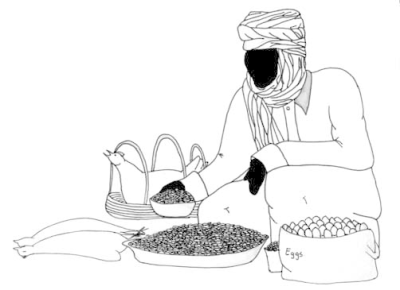

Impact of zoonoses on daily life
Impact of zoonoses on daily life

{kind=link}
{kind=link}
{kind=link}
The role of poverty
- Poor education: if you do not know that certain diseases exist, you will be less motivated to prevent them.
- Poor sanitary conditions: lack of knowledge and lack of money to build good sanitary systems.
- Cheaper animals are often less healthy animals. Cheaper meat is never the healthiest meat and often has not been inspected, therefore, it has a greater risk of harbouring microbes that can make you ill.
- Poor veterinary and public health services: lack of veterinary services worsens the situation in rural communities for those who cannot pay for private services.
- Poor people are often less well nourished and less healthy and are more susceptible to infectious disease in general and zoonoses in particular.
- Lack of money to set up a good health system for both animals and humans.
Importance of zoonoses in rural areas
1) Pastoralists and herders
2) A more sedentary, small-scale system
3) Commercial, large-scale animal production.
Box 5: "Bad" meatPeople in poor rural communities often eat infected meat or meat from animals that are found dead. A study in Ghana showed that 240 out of 250 interviewed cattle owners, butchers and consumers knew about anthrax and the signs of the disease. But none of them knew that the microbe that causes anthrax could be transmitted from dead cows to humans. 225 persons knew that eating meat from cattle that had died from ?unnatural causes? could be fatal to humans. Still, 25 persons thought that there was no risk at all, and although 42 persons thought there was a risk, they felt that anthrax could be prevented by eating certain herbs (which is not the case). Moreover, beef is expensive and a good source of protein, so people find it wasteful not to eat the meat. Source: Human behavioural factors implicated in outbreaks of human anthrax in the Tamale municipality of northern Ghana. Opare C, Nsiire A, Awumbilla B, Akanmori BD. Acta Trop. 2000; 76:49-52. |
Other factors that can enhance the occurrence of zoonotic diseases in rural areas include the following:
- There is a far greater likelihood of contact between livestock and wildlife in rural areas. Some zoonoses can live in both livestock and wildlife, which makes it difficult to get rid of these diseases. An example of one such zoonosis is trypanosomiasis or sleeping sickness in cattle.
- Civil unrest and insecurity can increase movement of people and their animals as they flee and return to their areas of habitation.
- Certain development programmes promote inappropriate livestock production systems affecting pastoralists, for instance, who are often forced to settle instead of leading their usual nomadic life. They are not accustomed to the new situation and to the risks a sedentary life brings to their animals.
- Besides animal production, livestock keepers in rural areas often need their animals for other activities, such as an ox for ploughing or a donkey to take fruits to the market. A sick animal is of no use.
- Zoonotic diseases have a negative effect on animal production. Animals that carry a disease will give less milk, grow slower, stay smaller and lay fewer eggs. See chapter: Introduction
- Countries may set up trade restrictions for countries affected by a known zoonosis.
- The economic impact of zoonotic diseases is based on the economic value of the animals as well as the social well being of the rural communities.
- Zoonotic diseases also result in increased costs for controlling outbreaks.
Zoonoses in urban areas
All over the world and especially in developing countries cities keep cropping up and growing bigger and bigger. People migrate from rural areas to cities in search of work and a better life for themselves and their families. Having been used to keeping animals, people from rural areas tend to keep animals in cities too: urban livestock keeping. The animals can be sold and provide an easy cash return for school fees, health treatments and so forth. Keeping livestock, therefore, is a safety net especially for the poor. Kitchen waste and crop residues from markets is fed to the animals.
All kinds of animal species are kept in cities, ranging from guinea pigs (in Peru, for example) to poultry and ducks, pigs and small ruminants and even dairy cattle. Animals are not only kept for consumption, in some places horses and donkeys play an important part in providing transportation.
| Backyard stable in the city. Small houses, stables and cage situated together. |
| (c) Agromisa Foundation and CTA, Wageningen, 2008
|
Public health hazards
1) Close contact with (sick) animals
2) The market situation
3) Poor hygiene
4) Presence of insects and vermin.
1) Close contacts
2) Markets
3) Poor hygiene
|  |
| Man selling dead and live chickens in a marketplace |
| (c) Agromisa Foundation and CTA, Wageningen, 2008
|
The risk of you buying a sick animal at the market is considerable and you could easily slaughter an animal without ever knowing that it was sick. Consequently, you may end up becoming infected and ill.The risk of disease transmission from animal to humans (zoonoses) needs careful consideration. Food products derived from animals held under unhygienic conditions increase the risk of food-borne diseases, especially if the food products have not been pasteurized (milk), heated or cooked
4) Presence of insects and vermin
Box 6: Of rats and fleasPlaque is a disease that starts with flu-like symptoms, but can turn out to be deadly as well. A typical symptom is the swelling of lymph nodes, which can be felt and seen as painful bumps under the skin (bubonic plague). Without treatment around half of the patients die. It is most often transmitted via the bite of infected fleas. Plague is still present in the district of Lushoto, Tanzania. To reduce the plague outbreaks in the region, many measures were taken: education, medication and control of rats. But it did not work. Investigators found that these strategies did not take into account the fact that the risk was greater to children and women who slept on the floor: bitten more often by infected fleas. And most families kept dogs in their homes, which were also carriers of plague. Moreover, the people did not know how to get rid of rats and how to treat the plague. All these factors have made it really difficult to eradicate plague thus far (2008). Source: Kilonzo et al: Preliminary observations on factors responsible for long persistence and continued outbreaks of plague in Lushoto district, Tanzania. In: Acta Trop. 1997. |
Animals that are not kept for production: pets
The role of wildlife and vermin or pests
Box 7: Echinococcosis or hydatid diseaseMore cases of echinococcosis were reported from within the Tibetan pastoralist community, a few years after people started to use fences to keep their sheep and goats together. This was the result of overgrazing of land, because overgrazing attracted more vermin, like rats and small rabbits. These animals are a reservoir of echinococcosis. Possibly, slaughter offal of sheep and goats containing cysts was fed to the dogs as well, and the dogs had probably never been treated for tapeworms. See also chapter on: Echinococcosis Source: Wang et al. Fenced pasture: a possible risk factor for human alveolar echinococcosis in Tibetan pastoralist communities of Sichuan, China. In Acta Tropica, 2004
|
Information Source Links
- Zoonoses - Diseases transmitted from animals to humans. Agromisia. (2008). Agrodok-Series No.46. ISBN Agromisa: 978-90-8573-105-4
Last updated:
| Unless otherwise stated, all content on the Infonet Biovision Website is licensed under a Creative Commons License | Disclaimer |